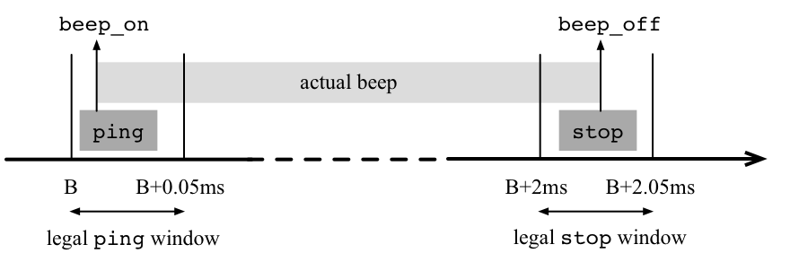

The overall purpose of a Timber program is to react to events sent to it from its execution environment. This process is potentially infinite, and the order of external events is also not generally known in advance.
To capture this intuition, Timber defines its primary run-time structure to be a set of interconnected reactive objects, that each encapsulate a piece of the global program state. A reactive object is a passive entity defined by a set of methods, whose relative execution order is left to be determined by clocks and external events. Between invocations, a Timber object just maintains its state, ready to react when a method call occurs. Like real-world objects, Timber objects evolve in parallel, although the methods belonging to a particular object are always run under mutually exclusion. Concurrency as well as state protection is thus implicit in Timber, and does not require any direct mentioning of threads or other concurrency constructs.
Objects are created by instantiating a class. Methods are either asynchronous or synchronous, as denoted by the keywords action and request, respectively. The most radical property of Timber is that it is free from any indefinitely blocking constructs; because of this, a Timber object is always fully responsive when not actively executing code. This process structure should be contrasted to the common infinite event-loop pattern in other languages, where blocking system calls are used to partition an otherwise linear thread of execution into event-handling fragments.
Each reaction in Timber is furthermore associated with a programmable timing window, delimited by upper and lower constraints called the baseline and the deadline of a reaction. The semantics of these constraints is formally defined like the rest of the language, and serves the purpose of codifying the legal behavior of a Timber system in a platform-independent manner. The timing window is inherited by each method call by default, but can also be manually set by the programmer; using the constructs after for moving a window forward with an offset, and before for setting a timing window width. Both values are measured relative to the fixed reference-points of baselines, never from the point in time a method call is actually made. Posting a message to arrive at some specific time into the future is thus easy in Timber, and defining a periodic process amounts to the special case of repeating such a pattern recursively.
The following Timber example shows a simple implementation of a sonar driver that is coupled to an alarm. The specifications assumed state that a sonar beep should be 2 milliseconds long, with a maximum jitter of 50 microseconds, and that the required accuracy of the measurements dictate that time-stamps associated with beeps must also be accurate down to the 50 microsecond range. The figure below illustrates the timing windows constraining the involved methods ping and stop, and thus, indirectly, the actual beep produced.

Furthermore, the sonar is supposed to sound every 3 seconds, and the deadline for reacting to off-limit measurements is 5 milliseconds. These specifications look as follows when translated into Timber code:
sonar port alarm critical =
class
tm = new timer
count := 0
ping = before (microsec 50) action
port.write beep_on
tm.reset
after (millisec 2) stop
after (sec 3) ping
stop = before (microsec 50) action
port.write beep_off
echo = before (millisec 5) action
diff <- tm.sample
if critical diff then
count := count + 1
alarm count
result { interrupt = echo, start = ping }
The header sonar port alarm critical here defines function sonar to take port (the port controlling the beeping hardware), alarm (the method to call in emergency) and critical (a boolean function on time values) as parameters. The shown class construct creates a local timer object instance tm, initializes a state variable count to 0, and furthermore defines the asynchronous methods ping, stop and echo. The resulting interface is a record containing methods named interrupt and start, which are just exported aliases for the local method names echo and ping, respectively.
A timer object allows the time between the current baseline and the baseline of the last timer reset to be measured. This is utilized in method echo, where the time since the last invocation of ping (bound to differ from the beep emission by at most 50 microseconds) is sampled and analyzed to determine if an alarm should be sent. When this happens, the provided alarm method is given the accumulated alarm count as an argument. Notice how each ping causes two future events to be triggered: one call to stop 2 milliseconds from the current baseline, and a recursive invocation of ping itself after 3 seconds to keep the periodic sonar activity alive.
As an example of how a sonar object might be instantiated to run on a bare-metal embedded system, here follows an example of the root declaration for such a system.
root regs = class
crit d = d < millisec 15
a = new alarm (regs!com_port_addr)
s = new sonar (regs!sonar_port_addr) a crit
result [ s.start, s.interrupt, a.ack ]
On this level, the interface to the software (as seen from the hardware) is the list of interrupt handlers it provides (enclosed in square brackets). Consequently (from the software perspective), the hardware takes the shape of an array of device registers that can be read or written (with ! being the indexing operator). The parametric class root above is thus of a type that can be instantiated and used directly by the run-time system of a typical bare-metal platform, although it should be noted that the exact shape of a root definition can vary between Timber platforms -- under the POSIX environment, for example, the root class returns just a startup procedure, while taking a full-featured operating system interface as an argument.
The semantics of Timber allows a natural implementation in terms of an EDF scheduler, where the asynchronous methods of a program correspond to tasks, objects take the role of shared resources, and all methods (synchronous as well as asynchronous) simply denote code sequences that require exclusive access to the owning object. Timber also relegates management of its garbage-collected heap to idle time, thus facilitating direct application of known schedulability and execution time analysis methods. The implementation technique used furthermore allows both objects and messages to be created in large numbers without incurring any run-time penalty, at the same time as the number of threads behind the scenes (i.e., the number of execution contexts and stacks) can be limited to the maximum preemption depth a system is expected to need.
Additional features of Timber not covered here include a strong static type system supporting subtyping, parametric polymorphism with overloading, and automatic type inference; a rich set of heap-allocated immutable datatypes; first-class citizenship to all values (meaning that methods as well as classes can be sent as arguments and stored inside data structures); and a referentially transparent evaluation semantics in the purely functional tradition.